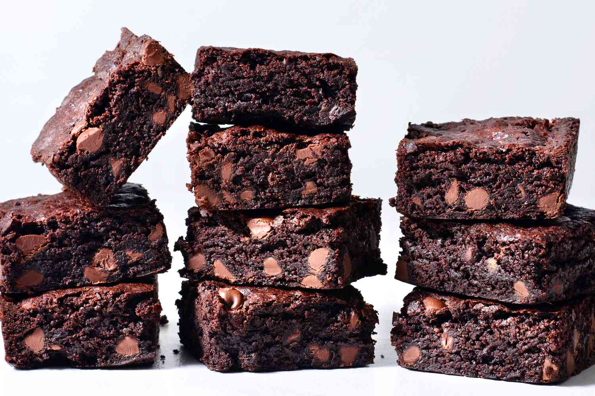

The Best Brownies you Will Ever Taste!

Craving Brownies? So am i
Craving brownies can be a common experience for many people, as these delicious chocolate treats are a popular dessert option around the world. The rich, fudgy texture and decadent chocolate flavor of brownies make them a favorite among dessert lovers. The combination of sugar, butter, eggs, flour, and cocoa powder creates a unique flavor and texture that can be hard to resist.
Brownies are not only delicious, but they can also be a comfort food for some people. Eating a warm brownie with a cold glass of milk can provide a sense of warmth and comfort, making it a perfect treat on a rainy day or during a stressful time.
Now, I will share with you my favorite brownie recipe.
Here's a list of ingredients you need, to make 24 Declicious Brownies!
- 2 ½ sticks unsalted butter, plus more, softened, for greasing
- 8 oz good-quality semisweet chocolate(225 g), or bittersweet chocolate, 60-70% cacao, roughly chopped
- ¾ cup unsweetened dutch process cocoa powder(90 g), divided
- 1 tablespoon espresso powder
- 2 cups granulated sugar(400 g)
- ½ cup dark brown sugar(110 g), packed
- 2 teaspoons vanilla extract
- 2 teaspoons kosher salt
- 6 large eggs
- 1 cup all-purpose flour(125 g)
- flaky sea salt, for sprinkling
And Here's How to Make Them
- Grease a 9x13-inch (23x33-cm) dark metal pan with softened butter, then line with parchment paper, leaving overhang on all sides. Grease the parchment with softened butter.
- Combine the chopped chocolate, ¼ cup (30 g) of cocoa powder, and espresso powder in a heatproof liquid measuring cup or medium bowl and set aside.
- Add the butter to a small saucepan over medium heat and cook until the butter just comes to a vigorous simmer, about 5 minutes, swirling the pan occasionally. Immediately pour the hot butter over the chocolate mixture and let sit for 2 minutes. Whisk until the chocolate is completely smooth and melted, then set aside.
- Combine the granulated sugar, brown sugar, vanilla extract, salt, and eggs in a large bowl. Beat with an electric hand mixer on high speed until light and fluffy, about 10 minutes. It will be similar to the texture of very thick pancake batter.
- With the mixer on, pour in the slightly cooled chocolate and butter mixture and blend until smooth.
- Position a rack in the middle of the oven and preheat to 350°F (180°C).
- Sift in the flour and remaining cocoa powder and use a rubber spatula to gently fold until just combined.
- Pour the batter into the prepared baking pan and smooth the top with a spatula. Bake until lightly puffed on top, about 20 minutes.
- Remove the baking pan from the oven using oven mitts or kitchen towels, then lightly drop the pan on a flat surface 1-2 times until the brownies deflate slightly. Sprinkle with flaky sea salt.
- Return the pan to the oven and bake until a wooden skewer inserted into the center of the brownies comes out fudgy but the edges look cooked through, about 20 minutes more. The center of the brownies will seem under-baked, but the brownies will continue to set as they cool.
- Set the brownies on a cooling rack and cool completely in the pan.
- Use the parchment paper to lift the cooled brownies out of the pan. Cut into 24 bars and serve immediately.
Enjoy!